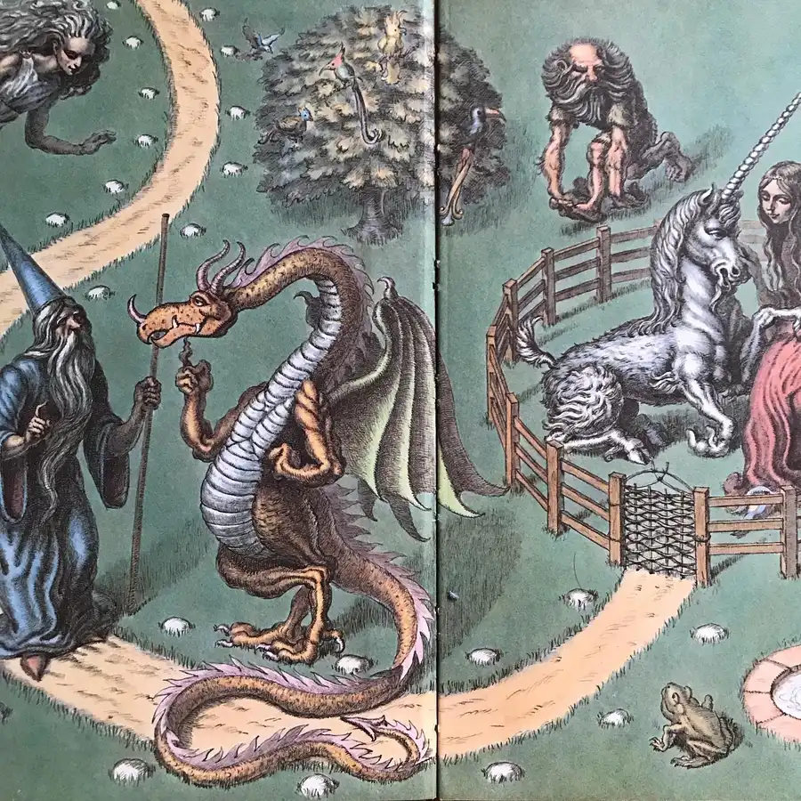
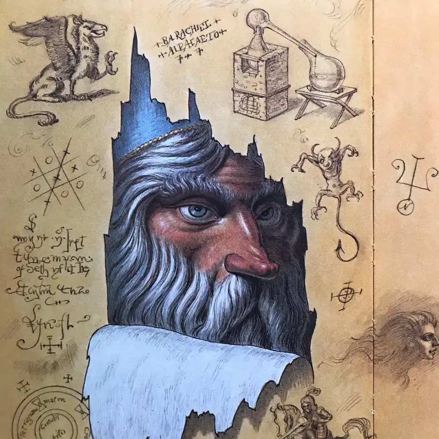
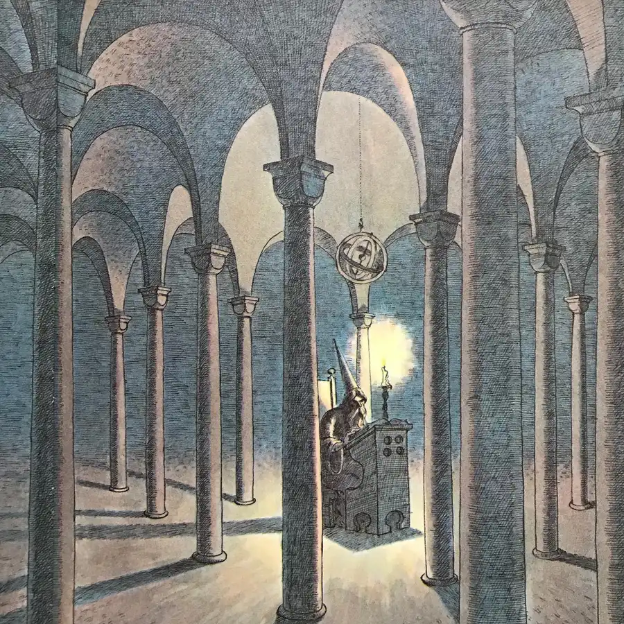
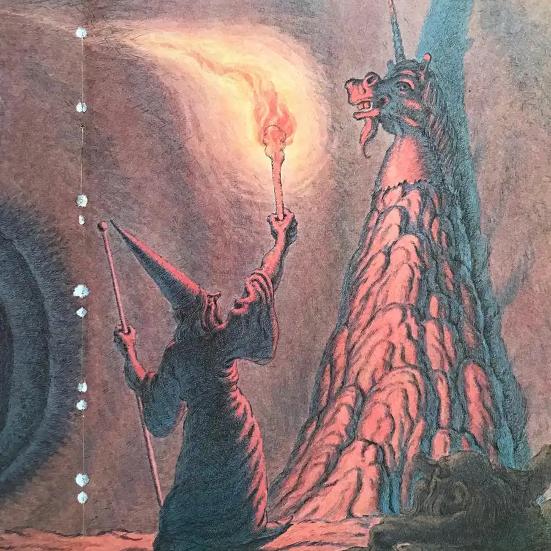
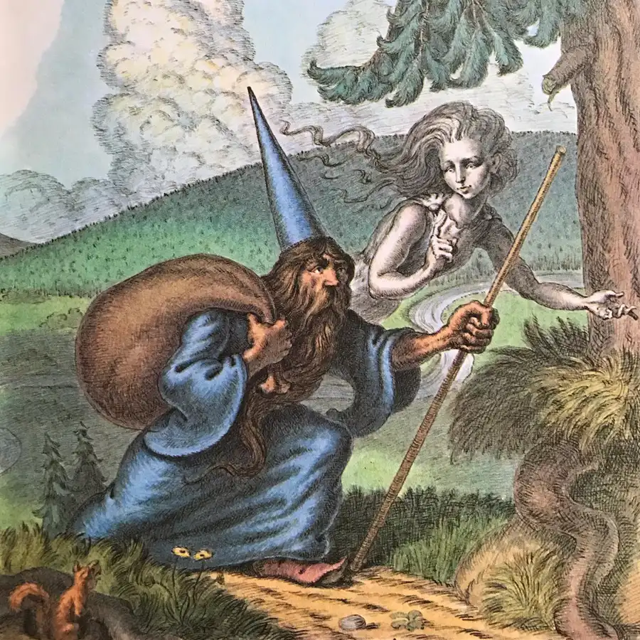
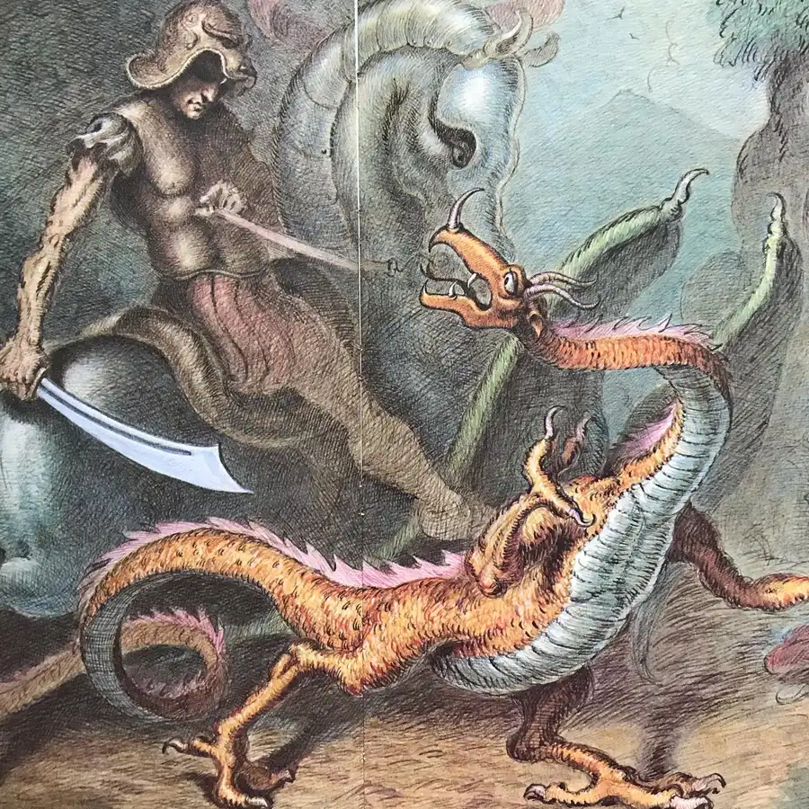
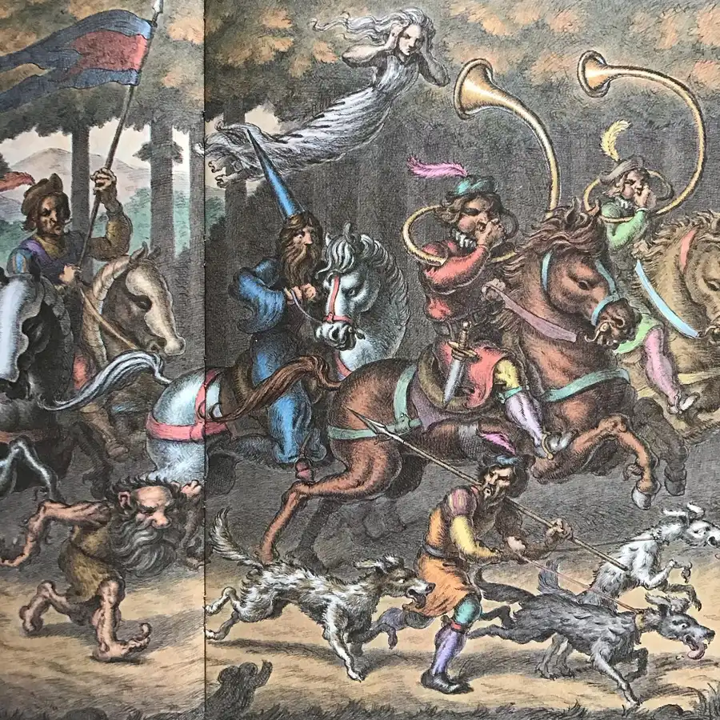

Have a look at Michael Berenstain’s The Sorcerer’s Scrapbook, a quaint and quirky medieval fantasy. Nicodemus Magnus relates his experiences as Court Sorcerer to Duke Wilhelm of Dunkledorf, in particular his quest to obtain the horn of a unicorn in order to protect the duke from poison. Berenstain depicts a bevy of magical creatures, arcane spells, and alchemical recipes with charming detail. His wicked sense of humor emerges in the interplay between writing and art: in key moments, the illustrations contradict the text, indicating the sorcerer’s vainglorious revisions to key moments in his own life history while slyly revealing the unglamorous truth. #michaelberenstain #sorcerer #spirit #dragon #unicorn #unicornhorn #stars #magic #book #books #childrensbooks #beautifulbooks #picturebook #picturebooks #picturebookillustration #picturebookart #childrensbookillustration #childrensliterature #illustration #kidlit #kidsbooks #bookworm #booklover #booklovers #bibliophile #bookstagram #bookstagrammer #bookstagrammers #instabook #instabooks







